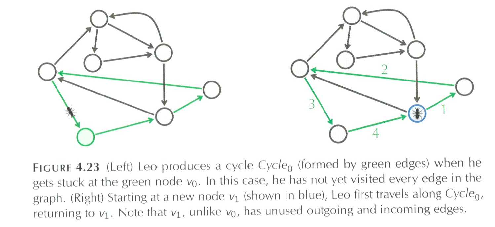
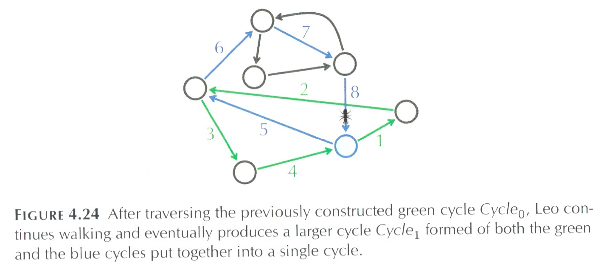
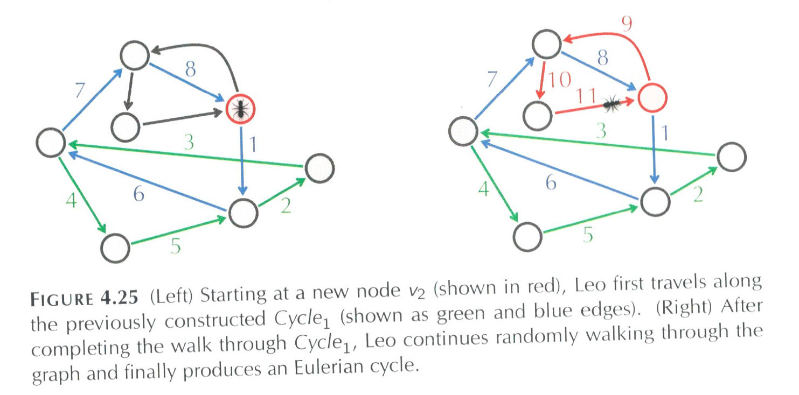

Implementing de Bruijn Graphs
We'll use adjacency lists and dictionaries to implement the de Bruijn graphs. Recall that for a de Bruijn graph:
- edges are labeled by the reads, and
- vertices are labeled by the suffix of incoming edges (and prefix of outgoing edges).
The entries in our dictionary have the following structure:
(prefix,[(read1,suffix1,count1),(read2,suffix2,count2),...])If there are outgoing edges (that is there's a suffix that never occurs as a prefix), the last part of the tuple is an empty list.
Here is an example of a very simple graph (basically just a path):

Since some nodes have the same labels, they're distinguished by color (we'll use numbers when needed since they're easier to represent in the computer).
The labels of the vertices are the suffix/prefix of reads, so, those will be the keys to the dictionary storing the adjacency list. For each key, we need to keep information about its outgoing edges. For example, the read TAA would generate two dictionary entries:
"TA" : ["AA"] "AA" : []where TA and AA are the keys for values are (possibly empty) lists of tuples. To simplify things, we will just keep the label of the destintation node (since combining the source and destination labels gives back the read). What happens if the next read is AAT? That corresponds to an edge AA → AT. The prefix, AA is already in the dictionary. For AA, we add an outgoing edge to AT. For AT, we add a new entry with no outgoing edges to give a dictionary:
{"TA" : ["AA"],
"AA" : ["AT"],
"AT" : []
}
What happens when we add the read ATG? It's prefix is AT, and it's suffix is TG. Since AT is already in the dictionary, we add to its existing entry. TG is not, so, we create a new entry:
{"TA" : ["AA"],
"AA" : ["AT"],
"AT" : ["TG"],
"TG" : []
}
Let's say we see the read ATG again. Since we care about how many times reads are seen, we'll add it in as a separate entry (unlike most graphs where we only allow one edge between any pair of vertices):
{"TA" : ["AA"],
"AA" : ["AT"],
"AT" : ["TG","TG"],
"TG" : []
}
Why do this? Each of these edges gives a possible "path" through the completed sequence. Keeping these entries separate will make finding complete sequences easier.
Rewriting the steps we did to create the new entries (and adding a few to set things up properly):
createDeBruijnGraph(reads):
- Initialize a dictionary, adjList to hold the adjacency list.
- For each read in reads:
- Get the prefix and suffix
- If the prefix is in the dictionary,
- Add suffix to its adjacencies: adjList[prefix] = suffix
- Else
- Create a new dictionary entry: adjList[prefix] = [suffix],
- If the suffix is not in the dictionary,
- Add in an entry with no outgoing edges: adjList[suffix] = []
- Return dictionary.
Now that it's in pseudocode, it's straightforward to translate this into Python. First, copy the outline into an editor, and try to fill in as many steps as possible before checking the code in deBruijn.py.
Eulerian Cycles
A cycle that traverses each edge of a graph exactly once is called an Eulerian cycle, and we say that a graph containing such a cycle is Eulerian. When graphs are balanced (all nodes have the same number of incoming and outgoing edges), then there's an Eulerian cycle. Our graphs are almost balanced: the starting and the ending nodes are not balanced. This can be solved by just connecting them. It's a bit tedious but the idea is to find the node with no outgoing edges and then find the one with no incoming edges, and link them (see balancedGraph() in deBruijn.py for details).
We've completed the hard work of setting up the (balanced) de Bruijn graph. Let's use it to find possibilities for the reconstructed sequence. The following algorithm constructs an Eulerian cycle in an arbitrary directed graph:
eulerianCycle(graph)
Form a cycle Cycle by randomly walking in Graph (don't visit the same edge twice!)
- While there are unexplored edges in graph:
- If possible, extend the current path by adding to the end.
- If not, find an node, i on the path with outgoing edges.
- Reorder the path to start from i to the end, then the beginning to i.
- cycle ← cycle2
- return cycle
We already have the graph structure set up, so, let's make a copy of it, unexplored, that we can use to cross off edges when we crossed them.
Our algorithm is going to start at a random place and keep walking until stuck. For example, say we have traversed the green highlighted edges as numbered below:

When Leo the ant (yes, that's what the book calls him) reaches the blue node, he can follow edge 5 (only unvisited edge leaving the blue node) and then go on to edge If it's visited every edge, then we're done. But what if it hasn't:

Instead of tossing out all the work we've done and starting from scratch, let's build on what we have, namely let's keep the green cycle above and find some node in the cycle that has an unvisited edge:

We can restart the walk at the red node above and visit a new cycle and then glue it together with our previous work (the cycle colored in green). We can keep repeating this process until the all the edges are visiting.
Let's write the code for this. First set up a function that takes a graph as input and returns an empty list for the cycle:
def eulerianCycle(graph):
cycle = []
return cycle
Test this to make sure there's no typos, and then let's add in more. We need a copy of the graph that we can modify to keep track of the edges left to explore.
To make a copy of a dictionary, use the copy() function:
def eulerianCycle(graph):
"""
Form a cycle Cycle by randomly walking in Graph
(don't visit the same edge twice!)
"""
#Put all edges into the unexplored edges:
unexplored = graph.copy()
cycle = []
return cycle
Test that, and let's choose a random graph to start the cycle. For dictionaries, we can remove something from the dictionary with popitem()
(if a node has multiple neighbors, we'll put the ones we don't use back).
def eulerianCycle(graph):
"""
Form a cycle Cycle by randomly walking in Graph
(don't visit the same edge twice!)
"""
#Put all edges into the unexplored edges:
unexplored = graph.copy()
#Grab an edge from graph to start off the cycle:
key, value = unexplored.popitem()
#Use that as the start of our cycle:
cycle = [key,value[0]]
#Add back to the dictionary if there's > 1 outgoing edges
if len(value) > 1:
unexplored[key] = value[1:]
print "The graph:", graph
print "The unexplored edges:, unexplored
print "The cycle", cycle
return cycle
Since dictionaries are stored in arbitrary order, different runs of the program might give you different edges chosen for your cycle. Test and make sure you get the unexplored graph has one less edge (namely the one in cycle) than graph.
How do we extend the cycle? Let's look again at Figure 4.23:
The next edge extends out from the last node in the cycle. For us, that's stored in cycle[-1]. So, let's check if it has any outgoing edges, and if so, use it to extend the cycle (after making sure one step forward works, we'll add it to a loop to repeat it):
#Check if you can go extend the cycle:
if cycle[-1] in unexplored:
neighbors = unexplored.pop(cycle[-1])
if len(neighbors) > 0:
if len(neighbors) > 1:
#Put back the remaining unvisited edges:
unexplored[cycle[-1]] = neighbors[1:]
#Add to cycle
cycle.append(neighbors[0])
What if the last node in the cycle has no unexplored outgoing edges? Then, we need to look at other nodes in the cycle and find one that does:
In code, this would be:
#Select a node i in cycle with still unexplored edges. else: for i in range(len(cycle)): print i, cycle if cycle[i] in unexplored: neighbors = unexplored.pop(cycle[i]) if len(neighbors) > 0: if len(neighbors) > 1: #Put back the remaining unvisited edges: unexplored[cycle[-1]] = neighbors[1:] #Reorder cycle to put i at the end: cycle = cycle[:i] + cycle[i:] #Add to cycle cycle.append(neighbors[0]) break
That's all the pieces, we now need to put the if-else statement that looks for the next node in a while loop:
#While there are unexplored edges in graph:
while unexplored:
#Check if you can go extend the cycle:
if cycle[-1] in unexplored:
...
#Select a node i in cycle with still unexplored edges.
else:
...
Inside the loop, we're removing an edge from unexplored every iteration, so, the structure is getting smaller and eventually while unexplored will be false (so it will stop!).
Here's all the pieces together (also in deBruijn.py)
def eulerianCycle(graph):
"""
Form a cycle Cycle by randomly walking in Graph
(don't visit the same edge twice!)
"""
#Put all edges into the unexplored edges:
unexplored = graph.copy()
#Grab an edge from graph to start off the cycle:
key, value = unexplored.popitem()
#Use that as the start of our cycle:
cycle = [key,value[0]]
#Add back to the dictionary if there's > 1 outgoing edges
if len(value) > 1:
unexplored[key] = value[1:]
#While there are unexplored edges in graph:
while unexplored:
#Check if you can go extend the cycle:
if cycle[-1] in unexplored:
neighbors = unexplored.pop(cycle[-1])
if len(neighbors) > 0:
if len(neighbors) > 1:
#Put back the remaining unvisited edges:
unexplored[cycle[-1]] = neighbors[1:]
#Add to cycle
cycle.append(neighbors[0])
#Select a node i in cycle with still unexplored edges.
else:
for i in range(len(cycle)):
print i, cycle
if cycle[i] in unexplored:
neighbors = unexplored.pop(cycle[i])
print "neighbors", neighbors
if len(neighbors) > 0:
#Reorder cycle to put i at the end:
cycle = cycle[:i] + cycle[i:]
if len(neighbors) > 1:
#Put back the remaining unvisited edges:
unexplored[cycle[-1]] = neighbors[1:]
#Add to cycle
cycle.append(neighbors[0])
break
return cycle
Try running the code on several different sets of reads to make sure it works.
Pulling It Altogether
Adding in the functions we wrote, we have a program that takes reads and prints out the cycle (still to do: convert the cycle into a finished sequence):
def assemble(k_mers):
"""
Takes k_mers and returns a sequence
"""
g = createDeBruijnGraph(reads)
print "The graph is: ", g
balanceGraph(g)
print "The balanced graph is: ", g
print "\n\nBuilding up the Eulerian cycle"
c = eulerianCycle(g)
print "\n\nFound the cycle:", c
#Missing step: convert the cycle c into the sequence:
return c
Challenges
- Given a string Text, its k-mer composition Composition(k,Text) is the collection of all k-mer substrings of Text (including repeated k-mers). For example,
Composition(3,"TATGGGGTGC") = {ATG, GGG, GGG, GGT, GTG, TAT, TGC, TGG}Note that the k-mers can appear in any order.Generate the k-mer composition of a string.
- Find the string spelled by a genome path.
Given: A sequence of k-mers Pattern_1, ... , Pattern_n such that the last k - 1 symbols of Pattern_i are equal to the first k - 1 symbols of Pattern_{i+1} for i from 1 to n-1.
Return: A string Text of length k+n-1 where the i-th k-mer in Text is equal to Pattern_i for all i.For example, with the data:
ACCGA CCGAA CGAAG GAAGC AAGCT
The output should be:ACCGAAGCT